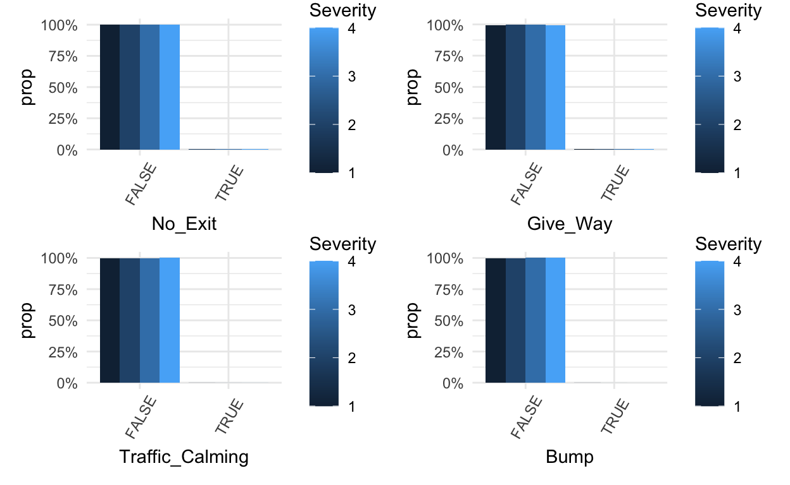

In depth analysis of modelling decisions, coding and recommendations when approaching car accidents prediction.
library(data.table)
library(dplyr)
library(tidyverse)
library(sf)
library(tidyverse) # for reading in data, graphing, and cleaning
library(tidymodels) # for modeling ... tidily
library(glmnet) # for regularized regression, including LASSO
library(naniar) # for examining missing values (NAs)
library(lubridate) # for date manipulation
library(moderndive) # for King County housing data
library(vip) # for variable importance plots
library(rmarkdown) # for paged tables
library(themis) # for step functions for unbalanced data
library(stacks) # for stacking models
library(DALEX) # for model interpretation
library(DALEXtra) # for extension of DALEX
library(patchwork) # for combining plots nicely
library(scales)
library(plotly)
library(gridExtra)
library(tidytext)
library(modelr)
library(caret)
library(ROSE)
library(glmnet)
library(rpart)
library(rpart.plot)
library(randomForest)
library(shiny)
library(bslib)
options(warn = -1)
theme_set(theme_minimal()) # my favorite ggplot2 theme :)
cars <- read_csv("small_accidents.csv", col_types = cols(.default = col_character())) %>%
type_convert()
cars %>%
group_by(City) %>%
summarize(Count=n()) %>%
arrange(desc(Count)) %>%
head(1000)
# A tibble: 1,000 x 2
City Count
<chr> <int>
1 Houston 9612
2 Los Angeles 7771
3 Charlotte 7435
4 Dallas 6545
5 Austin 5832
6 Miami 5207
7 Raleigh 4420
8 Atlanta 3760
9 Orlando 3300
10 Sacramento 3150
# … with 990 more rowsThe Fatality Analysis Reporting System indicated that an estimate of 8870 people died in motor vehicle traffic crashes in the second quarter of 2020 (NHTSA, 2020). This analysis is intended to bring light to the main environmental conditions that are associated with the severity of a car accident. For the purpose of this study we defined severity as the accident’s impact on traffic.
The data we used has 47 variables and 3 million observations for different car accidents. The data was collected from February 2016 to December 2020 for the 49 states of the US. The data base has been constructed partly by Moosavi, Sobhan, Mohammad Hossein Samavatian, Srinivasan Parthasarathy, and Rajiv Ramnath as “A Countrywide Traffic Accident Dataset” (2019). The other part of the data base was constructed by Moosavi, Sobhan, Mohammad Hossein Samavatian, Srinivasan Parthasarathy, Radu Teodorescu, and Rajiv Ramnath for their database “Accident Risk Prediction based on Heterogeneous Sparse Data: New Dataset and Insights.”
Using this data set, we predicted the Severity of an accident using stacked LASSO, Forest and classification three. Stacking combines predictions from many different models into a “super” predictor. In this case we would be averaging the predictions of the LASSO, Forest and classification three.
cars %>% summarise_all(~ mean(is.na(.))) %>%
pivot_longer(1:49, names_to = "Variables to drop", values_to = "NA proportion") %>%
filter(`NA proportion` >= 0.5)
# A tibble: 3 x 2
`Variables to drop` `NA proportion`
<chr> <dbl>
1 End_Lat 0.636
2 End_Lng 0.636
3 Number 0.633drop_na_cols <- c("End_Lat", "End_Lng", "Number")
not_useful <- c("ID", "Source", "Timezone", "Airport_Code", "Weather_Timestamp","Wind_Direction", "Description", "Bump", "Traffic_Calming", "Give_Way", "No_Exit", "Railway", "Roundabout", "Station", "Stop", "Amenity", "Street", "Zipcode", "Country", "Turning_Loop", "County", "TMC")
traffic <-
cars %>%
select(-all_of(drop_na_cols), -all_of(not_useful))
p1 <- ggplot(cars, aes(as.factor(Station), ..prop.., group = Severity)) +
geom_bar(aes(fill = Severity), position = "dodge") +
scale_y_continuous(labels = percent) +
theme(axis.text.x = element_text(angle = 60, vjust = 0.6))
p2 <- ggplot(cars, aes(Turning_Loop, ..prop.., group = Severity)) +
geom_bar(aes(fill = Severity), position = "dodge") +
scale_y_continuous(labels = percent) +
theme(axis.text.x = element_text(angle = 60, vjust = 0.6))
p3 <- ggplot(cars, aes(Country, ..prop.., group = Severity)) +
geom_bar(aes(fill = Severity), position = "dodge") +
scale_y_continuous(labels = percent) +
theme(axis.text.x = element_text(angle = 60, vjust = 0.6))
p4 <- ggplot(cars, aes(Amenity, ..prop.., group = Severity)) +
geom_bar(aes(fill = Severity), position = "dodge") +
scale_y_continuous(labels = percent) +
theme(axis.text.x = element_text(angle = 60, vjust = 0.6))
p5 <- ggplot(cars, aes(Stop, ..prop.., group = Severity)) +
geom_bar(aes(fill = Severity), position = "dodge") +
scale_y_continuous(labels = percent) +
theme(axis.text.x = element_text(angle = 60, vjust = 0.6))
p6 <- ggplot(cars, aes(Station, ..prop.., group = Severity)) +
geom_bar(aes(fill = Severity), position = "dodge") +
scale_y_continuous(labels = percent) +
theme(axis.text.x = element_text(angle = 60, vjust = 0.6))
p7 <- ggplot(cars, aes(Roundabout, ..prop.., group = Severity)) +
geom_bar(aes(fill = Severity), position = "dodge") +
scale_y_continuous(labels = percent) +
theme(axis.text.x = element_text(angle = 60, vjust = 0.6))
p8 <- ggplot(cars, aes(Railway, ..prop.., group = Severity)) +
geom_bar(aes(fill = Severity), position = "dodge") +
scale_y_continuous(labels = percent) +
theme(axis.text.x = element_text(angle = 60, vjust = 0.6))
p9 <- ggplot(cars, aes(No_Exit, ..prop.., group = Severity)) +
geom_bar(aes(fill = Severity), position = "dodge") +
scale_y_continuous(labels = percent) +
theme(axis.text.x = element_text(angle = 60, vjust = 0.6))
p10 <- ggplot(cars, aes(Give_Way, ..prop.., group = Severity)) +
geom_bar(aes(fill = Severity), position = "dodge") +
scale_y_continuous(labels = percent) +
theme(axis.text.x = element_text(angle = 60, vjust = 0.6))
p11 <- ggplot(cars, aes(Traffic_Calming, ..prop.., group = Severity)) +
geom_bar(aes(fill = Severity), position = "dodge") +
scale_y_continuous(labels = percent) +
theme(axis.text.x = element_text(angle = 60, vjust = 0.6))
p12 <- ggplot(cars, aes(Bump, ..prop.., group = Severity)) +
geom_bar(aes(fill = Severity), position = "dodge") +
scale_y_continuous(labels = percent) +
theme(axis.text.x = element_text(angle = 60, vjust = 0.6))
p1+ p2+ p3+ p4
p5+ p6+ p7+ p8
p9+ p10+ p11+ p12

We chose to not use multiple of the 47 variables that we considered weren’t relevant to the analysis we were conducting. As we can see in the table, end latitude, end longitude’s proportion of NA values are higher than 50%. Given the distribution of wind direction through the different severity levels, we decided that the variable is uninformative. The description, bump, traffic calming, give way, no exit, railway, roundabout, station, stop, amenity, street, zip code, country, turning loop, county and TMC code weren’t informative either given the distribution between the severity categories or near-zero variance.
traffic <- traffic %>%
rename("Distance" = `Distance(mi)`, "Temperature" = `Temperature(F)`, "Humidity" = `Humidity(%)`,
"Pressure" = `Pressure(in)`, "Visibility" = `Visibility(mi)`, "Wind_Speed" = `Wind_Speed(mph)`, "Precipitation" = `Precipitation(in)`, "Wind_Chill" = `Wind_Chill(F)`)
traffic$Severity <- as.character(traffic$Severity)
traffic <-
traffic %>%
add_n_miss() %>%
filter(n_miss_all == 0) %>%
select(-n_miss_all)
traffic <- traffic %>%
mutate("Status" = factor(ifelse(Severity == "3" | Severity == "4", "Severe", "Not Severe"),
levels = c("Not Severe", "Severe")))
In this section of data cleaning and pre-processing above, we renamed some of the variables that had their units of measurement for ease of use later in our modeling and for our shinyApp. We took out entries of data that had NAs. If this was a smaller dataset, this may have negatively impacted our analysis, but we don’t believe this effected our analysis for this project because even after taking out some data, we had a lot left to work with. Another very important part of this section is that, we took the Severity variable that we are looking at and split it into two to make it into a Categorical variable called Status. Severities 1 and 2 were grouped in to be Not Severe and 3 and 4 were grouped as Severe in the Status variable.
traffic_time <- traffic %>%
mutate(Duration = (End_Time - Start_Time)) %>%
# accident duration should be positive
filter(!(Duration < 0)) %>%
separate(Start_Time, into = c("Date", "Time"), sep = " ") %>%
mutate("Year" = str_sub(Date, 1, 4), "Month" = str_sub(Date, 6, 7), "Day" = str_sub(Date, 9, 10),
"Wday" = as.character(wday(Date))) %>%
mutate("Hour" = str_sub(Time,1,2)) %>%
select(-c("Date", "Time", "End_Time")) %>%
select(Severity, Year, Month, Day, Hour, Wday, Duration, everything())
In this section, we used the End_Time and Start_Time variables to come up with several other variables such as Duration, Date, Time, Year, Month, Day, Wday and Hour.
#Drop levels that have less than 20 observations
weather_to_drop <-
traffic_time %>%
count(Weather_Condition) %>%
filter(n < 20) %>%
select(Weather_Condition)
weather_to_drop <-
weather_to_drop$Weather_Condition %>%
unlist()
traffic_weather <- traffic_time %>%
filter(!(Weather_Condition %in% weather_to_drop)) %>%
mutate(Weather_Condition = factor(Weather_Condition))
traffic2 <- traffic_weather
count_city <- traffic2 %>%
group_by(City) %>%
summarize(Count=n()) %>%
arrange(desc(Count)) %>%
head(950)
traffic3 <-
traffic2 %>%
left_join(count_city, by="City")
traffic_final <-
traffic3 %>%
add_n_miss() %>%
filter(n_miss_all == 0) %>%
select(-n_miss_all) %>%
select(-Count)
#write.csv(traffic_final, "traffic_final.csv", row.names = FALSE)
read_csv("traffic_final.csv")
# A tibble: 98,088 x 29
Severity Year Month Day Hour Wday Duration Start_Lat Start_Lng
<dbl> <dbl> <chr> <chr> <chr> <dbl> <dbl> <dbl> <dbl>
1 2 2016 12 07 23 4 44.4 38.6 -121.
2 2 2016 12 08 09 5 29.6 38.4 -123.
3 2 2016 12 23 09 6 29.7 38.3 -123.
4 2 2017 01 02 19 2 29.7 39.3 -121.
5 2 2017 01 22 15 1 44.6 38.1 -122.
6 2 2017 01 23 20 2 29.6 37.2 -122.
7 2 2017 01 23 22 2 29.8 37.4 -122.
8 2 2017 01 25 06 4 44.6 38.0 -122.
9 2 2016 11 30 08 4 70.0 38.7 -122.
10 2 2016 06 21 16 3 60 34.4 -119.
# … with 98,078 more rows, and 20 more variables: Distance <dbl>,
# Side <chr>, City <chr>, State <chr>, Temperature <dbl>,
# Wind_Chill <dbl>, Humidity <dbl>, Pressure <dbl>,
# Visibility <dbl>, Wind_Speed <dbl>, Precipitation <dbl>,
# Weather_Condition <chr>, Crossing <lgl>, Junction <lgl>,
# Traffic_Signal <lgl>, Sunrise_Sunset <chr>, Civil_Twilight <chr>,
# Nautical_Twilight <chr>, Astronomical_Twilight <chr>,
# Status <chr>Upon close examination of the Weather_Conditions variable, we realized that it had a lot of different observations and we wanted to narrow it down. So, we filtered and dropped levels that have less than 20 observations. We had to narrow down the City variable as well. We have over 4000 distinct cities under the top 12 states. Shiny only allows a thousand different observations and so in order for all the top cities to fit in our shiny app, we had to narrow down the list of cities to the top 950.
#modeling pre-process for traffic_final
traffic_mod <- traffic_final %>%
mutate(Status = as.factor(Status)) %>%
mutate(across(where(is.character), as.factor)) %>%
select(-c(State, Severity, Year, Day)) %>%
# select(-arrival_date_year,
# -reservation_status,
# -reservation_status_date) %>%
add_n_miss() %>%
filter(n_miss_all == 0) %>%
select(-n_miss_all)
traffic_mod$Crossing <- as.factor(traffic_mod$Crossing)
traffic_mod$Month <- as.numeric(traffic_mod$Month)
traffic_mod$Wday <- as.numeric(traffic_mod$Wday)
traffic_mod$Hour <- as.numeric(traffic_mod$Hour)
traffic_mod$Duration <- as.numeric(traffic_mod$Duration)
traffic_mod$Junction <- as.factor(traffic_mod$Junction)
traffic_mod$Traffic_Signal <- as.factor(traffic_mod$Traffic_Signal)
set.seed(494) #for reproducibility
# Randomly assigns 75% of the data to training.
traffic_split <- initial_split(traffic_mod,
prop = .50)
traffic_split
<Analysis/Assess/Total>
<49044/49044/98088>traffic_training <- training(traffic_split)
traffic_testing <- testing(traffic_split)
Here, we get the data ready for the modeling part by taking the non-predictive variables out of our data set, and converting the predictors’ data type into the correct type. After that, we split our data into testing and training data according to a 50 percentage split.
#lasso
set.seed(494)
lasso_recipe <-
recipe(Status ~ .,
data = traffic_training) %>%
# step_mutate(County,
# County = fct_lump_n(County, n = 5)) %>%
step_mutate(City,
City = fct_lump_n(City, n = 5)) %>%
step_normalize(all_predictors(),
-all_nominal(),
-all_outcomes()) %>%
step_dummy(all_nominal(),
-all_outcomes())
lasso_recipe %>%
prep() %>%
juice()
# A tibble: 49,044 x 64
Month Hour Wday Duration Start_Lat Start_Lng Distance
<dbl> <dbl> <dbl> <dbl> <dbl> <dbl> <dbl>
1 1.21 1.86 -0.0289 -0.0345 0.715 -1.31 -0.252
2 1.21 -0.527 0.536 -0.0399 0.682 -1.38 -0.252
3 1.21 -0.527 1.10 -0.0399 0.665 -1.38 -0.260
4 -1.93 0.495 -1.72 -0.0344 0.621 -1.36 -0.252
5 -1.93 1.69 -1.16 -0.0398 0.464 -1.34 -0.252
6 -0.504 -0.527 -1.16 -0.0366 -0.161 -1.15 -0.260
7 -0.219 -1.04 1.67 -0.0342 -0.155 -1.15 -0.260
8 -0.219 -1.89 -0.594 -0.0287 -0.141 -1.16 -0.260
9 -0.219 -0.0158 -0.0289 -0.0368 -0.178 -1.17 -0.260
10 -0.219 1.35 -0.0289 -0.0398 -0.179 -1.16 -0.260
# … with 49,034 more rows, and 57 more variables: Temperature <dbl>,
# Wind_Chill <dbl>, Humidity <dbl>, Pressure <dbl>,
# Visibility <dbl>, Wind_Speed <dbl>, Precipitation <dbl>,
# Status <fct>, Side_R <dbl>, City_Dallas <dbl>,
# City_Houston <dbl>, City_Los.Angeles <dbl>, City_Miami <dbl>,
# City_Other <dbl>, Weather_Condition_Cloudy <dbl>,
# Weather_Condition_Cloudy...Windy <dbl>,
# Weather_Condition_Drizzle <dbl>, Weather_Condition_Fair <dbl>,
# Weather_Condition_Fair...Windy <dbl>,
# Weather_Condition_Fog <dbl>, Weather_Condition_Haze <dbl>,
# Weather_Condition_Heavy.Rain <dbl>,
# Weather_Condition_Heavy.Rain...Windy <dbl>,
# Weather_Condition_Heavy.Snow <dbl>,
# Weather_Condition_Heavy.T.Storm <dbl>,
# Weather_Condition_Light.Drizzle <dbl>,
# Weather_Condition_Light.Freezing.Rain <dbl>,
# Weather_Condition_Light.Rain <dbl>,
# Weather_Condition_Light.Rain...Windy <dbl>,
# Weather_Condition_Light.Rain.with.Thunder <dbl>,
# Weather_Condition_Light.Snow <dbl>,
# Weather_Condition_Light.Snow...Windy <dbl>,
# Weather_Condition_Mist <dbl>,
# Weather_Condition_Mostly.Cloudy <dbl>,
# Weather_Condition_Mostly.Cloudy...Windy <dbl>,
# Weather_Condition_N.A.Precipitation <dbl>,
# Weather_Condition_Overcast <dbl>,
# Weather_Condition_Partly.Cloudy <dbl>,
# Weather_Condition_Partly.Cloudy...Windy <dbl>,
# Weather_Condition_Patches.of.Fog <dbl>,
# Weather_Condition_Rain <dbl>,
# Weather_Condition_Rain...Windy <dbl>,
# Weather_Condition_Scattered.Clouds <dbl>,
# Weather_Condition_Shallow.Fog <dbl>,
# Weather_Condition_Smoke <dbl>, Weather_Condition_Snow <dbl>,
# Weather_Condition_T.Storm <dbl>, Weather_Condition_Thunder <dbl>,
# Weather_Condition_Thunder.in.the.Vicinity <dbl>,
# Weather_Condition_Wintry.Mix <dbl>, Crossing_TRUE. <dbl>,
# Junction_TRUE. <dbl>, Traffic_Signal_TRUE. <dbl>,
# Sunrise_Sunset_Night <dbl>, Civil_Twilight_Night <dbl>,
# Nautical_Twilight_Night <dbl>, Astronomical_Twilight_Night <dbl>lasso_mod <-
logistic_reg(mixture = 1) %>%
set_engine("glmnet") %>%
set_args(penalty = tune()) %>%
set_mode("classification")
lasso_wf <-
workflow() %>%
add_recipe(lasso_recipe) %>%
add_model(lasso_mod)
set.seed(494) #for reproducible 5-fold
traffic_cv <- vfold_cv(traffic_training,
v = 5)
penalty_grid <- grid_regular(penalty(),
levels = 10)
# add ctrl_grid - assures predictions and workflows are saved
ctrl_grid <- control_stack_resamples()
metric <- metric_set(accuracy)
# tune the model
lasso_tune <-
lasso_wf %>%
tune_grid(
resamples = traffic_cv,
grid = penalty_grid,
control = ctrl_grid
)
lasso_tune %>%
collect_metrics()
# A tibble: 20 x 7
penalty .metric .estimator mean n std_err .config
<dbl> <chr> <chr> <dbl> <int> <dbl> <chr>
1 1.00e-10 accuracy binary 0.808 5 1.52e-3 Preprocessor1_…
2 1.00e-10 roc_auc binary 0.738 5 7.72e-4 Preprocessor1_…
3 1.29e- 9 accuracy binary 0.808 5 1.52e-3 Preprocessor1_…
4 1.29e- 9 roc_auc binary 0.738 5 7.72e-4 Preprocessor1_…
5 1.67e- 8 accuracy binary 0.808 5 1.52e-3 Preprocessor1_…
6 1.67e- 8 roc_auc binary 0.738 5 7.72e-4 Preprocessor1_…
7 2.15e- 7 accuracy binary 0.808 5 1.52e-3 Preprocessor1_…
8 2.15e- 7 roc_auc binary 0.738 5 7.72e-4 Preprocessor1_…
9 2.78e- 6 accuracy binary 0.808 5 1.52e-3 Preprocessor1_…
10 2.78e- 6 roc_auc binary 0.738 5 7.72e-4 Preprocessor1_…
11 3.59e- 5 accuracy binary 0.808 5 1.53e-3 Preprocessor1_…
12 3.59e- 5 roc_auc binary 0.738 5 7.75e-4 Preprocessor1_…
13 4.64e- 4 accuracy binary 0.808 5 1.69e-3 Preprocessor1_…
14 4.64e- 4 roc_auc binary 0.737 5 9.58e-4 Preprocessor1_…
15 5.99e- 3 accuracy binary 0.807 5 2.46e-3 Preprocessor1_…
16 5.99e- 3 roc_auc binary 0.730 5 2.33e-3 Preprocessor1_…
17 7.74e- 2 accuracy binary 0.806 5 2.34e-3 Preprocessor1_…
18 7.74e- 2 roc_auc binary 0.5 5 0. Preprocessor1_…
19 1.00e+ 0 accuracy binary 0.806 5 2.34e-3 Preprocessor1_…
20 1.00e+ 0 roc_auc binary 0.5 5 0. Preprocessor1_…best_param <- lasso_tune %>%
select_best(metric = "accuracy")
best_param
# A tibble: 1 x 2
penalty .config
<dbl> <chr>
1 0.000464 Preprocessor1_Model07final_lasso <- lasso_wf %>%
finalize_workflow(best_param) %>%
fit(data = traffic_training)
final_lasso %>%
pull_workflow_fit() %>%
tidy()
# A tibble: 64 x 3
term estimate penalty
<chr> <dbl> <dbl>
1 (Intercept) -3.56 0.000464
2 Month -0.353 0.000464
3 Hour 0.0587 0.000464
4 Wday -0.000337 0.000464
5 Duration 0 0.000464
6 Start_Lat 0.135 0.000464
7 Start_Lng 0.462 0.000464
8 Distance 0.0946 0.000464
9 Temperature 0.224 0.000464
10 Wind_Chill -0.0209 0.000464
# … with 54 more rowsThe first model we build is a classification LASSO model, which selects the variables based on the magnitude of their coefficients. We tuned the LASSO model using a level 10 panelty grid, and selected the tuning parameter with the best prediction accuracy as the parameter for the final model. The accuracy for the best LASSO model is 80.956%, which means that the LASSO model predicts the right severity level 80.956% of the times.
#classification rf
set.seed(494)
rf_recipe <-
recipe(Status ~ .,
data = traffic_training) %>%
step_mutate_at(all_numeric(),
fn = ~as.numeric(.))
rf_recipe %>%
prep() %>%
juice()
# A tibble: 49,044 x 25
Month Hour Wday Duration Start_Lat Start_Lng Distance Side City
<dbl> <dbl> <dbl> <dbl> <dbl> <dbl> <dbl> <fct> <fct>
1 12 24 4 44.4 38.6 -121. 0.01 R Sacr…
2 12 10 5 29.6 38.4 -123. 0.01 R Sant…
3 12 10 6 29.7 38.3 -123. 0 L Seba…
4 1 16 1 44.6 38.1 -122. 0.01 R Peta…
5 1 23 2 29.8 37.4 -122. 0.01 L Sant…
6 6 10 2 38.6 34.4 -119. 0 R Newh…
7 7 7 7 45 34.4 -119. 0 R Vale…
8 7 2 3 60 34.5 -119. 0 L Cast…
9 7 13 4 38.1 34.3 -119. 0 R Simi…
10 7 21 4 30 34.3 -119. 0 R Simi…
# … with 49,034 more rows, and 16 more variables: Temperature <dbl>,
# Wind_Chill <dbl>, Humidity <dbl>, Pressure <dbl>,
# Visibility <dbl>, Wind_Speed <dbl>, Precipitation <dbl>,
# Weather_Condition <fct>, Crossing <fct>, Junction <fct>,
# Traffic_Signal <fct>, Sunrise_Sunset <fct>, Civil_Twilight <fct>,
# Nautical_Twilight <fct>, Astronomical_Twilight <fct>,
# Status <fct>rf_model <-
rand_forest(mtry = tune(),
min_n = tune(),
trees = 10) %>%
set_mode("classification") %>%
set_engine("ranger")
rf_workflow <-
workflow() %>%
add_recipe(rf_recipe) %>%
add_model(rf_model)
rf_penalty_grid <-
grid_regular(finalize(mtry(),
traffic_training %>%
select(-Status)),
min_n(),
levels = 3)
# traffic_cv <- vfold_cv(traffic_training,
# v = 5)
rf_tune <-
rf_workflow %>%
tune_grid(
resamples = traffic_cv,
grid = rf_penalty_grid,
control = control_stack_grid()
)
rf_tune %>%
collect_metrics()
# A tibble: 18 x 8
mtry min_n .metric .estimator mean n std_err .config
<int> <int> <chr> <chr> <dbl> <int> <dbl> <chr>
1 1 2 accuracy binary 0.806 5 0.00225 Preprocessor1_…
2 1 2 roc_auc binary 0.786 5 0.00307 Preprocessor1_…
3 12 2 accuracy binary 0.842 5 0.00184 Preprocessor1_…
4 12 2 roc_auc binary 0.851 5 0.00291 Preprocessor1_…
5 24 2 accuracy binary 0.841 5 0.00267 Preprocessor1_…
6 24 2 roc_auc binary 0.848 5 0.00259 Preprocessor1_…
7 1 21 accuracy binary 0.807 5 0.00210 Preprocessor1_…
8 1 21 roc_auc binary 0.796 5 0.00191 Preprocessor1_…
9 12 21 accuracy binary 0.846 5 0.00172 Preprocessor1_…
10 12 21 roc_auc binary 0.868 5 0.00193 Preprocessor1_…
11 24 21 accuracy binary 0.844 5 0.00125 Preprocessor1_…
12 24 21 roc_auc binary 0.862 5 0.00229 Preprocessor1_…
13 1 40 accuracy binary 0.807 5 0.00210 Preprocessor1_…
14 1 40 roc_auc binary 0.788 5 0.00353 Preprocessor1_…
15 12 40 accuracy binary 0.848 5 0.00105 Preprocessor1_…
16 12 40 roc_auc binary 0.872 5 0.00170 Preprocessor1_…
17 24 40 accuracy binary 0.844 5 0.00189 Preprocessor1_…
18 24 40 roc_auc binary 0.866 5 0.00212 Preprocessor1_…After conducting the LASSO model, we also build the random forest model, which builds 10 trees and gives out the mode of the predictions of these 10 trees. We thought that this model might be more accurate than the LASSO model although it is also more computationally inefficient. We used a panelty grid of level 3 to tune our random forest model, and the tuning parameter with the largest accuracy is with mtry = 12 and min_n = 40. The largest accuracy is 84.693%, which is higher than the LASSO model.
#decision trees
set.seed(494)
tree_model <-
decision_tree() %>%
set_mode("classification") %>%
set_engine("rpart")
tree_workflow <-
workflow() %>%
add_recipe(rf_recipe) %>%
add_model(tree_model)
tree_fit <-
tree_workflow %>%
fit_resamples(traffic_cv,
# metrics = metric,
control = control_stack_resamples()
)
collect_metrics(tree_fit)
# A tibble: 2 x 6
.metric .estimator mean n std_err .config
<chr> <chr> <dbl> <int> <dbl> <chr>
1 accuracy binary 0.824 5 0.00143 Preprocessor1_Model1
2 roc_auc binary 0.686 5 0.00309 Preprocessor1_Model1Finally, in order to create a stacked model, we build a third model which is just a simple classification decision tree. The accuracy for the decision tree model is 82.559%, which is also higher than the LASSO.
# model stacking
lasso_tune %>%
collect_metrics()
# A tibble: 20 x 7
penalty .metric .estimator mean n std_err .config
<dbl> <chr> <chr> <dbl> <int> <dbl> <chr>
1 1.00e-10 accuracy binary 0.808 5 1.52e-3 Preprocessor1_…
2 1.00e-10 roc_auc binary 0.738 5 7.72e-4 Preprocessor1_…
3 1.29e- 9 accuracy binary 0.808 5 1.52e-3 Preprocessor1_…
4 1.29e- 9 roc_auc binary 0.738 5 7.72e-4 Preprocessor1_…
5 1.67e- 8 accuracy binary 0.808 5 1.52e-3 Preprocessor1_…
6 1.67e- 8 roc_auc binary 0.738 5 7.72e-4 Preprocessor1_…
7 2.15e- 7 accuracy binary 0.808 5 1.52e-3 Preprocessor1_…
8 2.15e- 7 roc_auc binary 0.738 5 7.72e-4 Preprocessor1_…
9 2.78e- 6 accuracy binary 0.808 5 1.52e-3 Preprocessor1_…
10 2.78e- 6 roc_auc binary 0.738 5 7.72e-4 Preprocessor1_…
11 3.59e- 5 accuracy binary 0.808 5 1.53e-3 Preprocessor1_…
12 3.59e- 5 roc_auc binary 0.738 5 7.75e-4 Preprocessor1_…
13 4.64e- 4 accuracy binary 0.808 5 1.69e-3 Preprocessor1_…
14 4.64e- 4 roc_auc binary 0.737 5 9.58e-4 Preprocessor1_…
15 5.99e- 3 accuracy binary 0.807 5 2.46e-3 Preprocessor1_…
16 5.99e- 3 roc_auc binary 0.730 5 2.33e-3 Preprocessor1_…
17 7.74e- 2 accuracy binary 0.806 5 2.34e-3 Preprocessor1_…
18 7.74e- 2 roc_auc binary 0.5 5 0. Preprocessor1_…
19 1.00e+ 0 accuracy binary 0.806 5 2.34e-3 Preprocessor1_…
20 1.00e+ 0 roc_auc binary 0.5 5 0. Preprocessor1_…rf_tune %>%
collect_metrics()
# A tibble: 18 x 8
mtry min_n .metric .estimator mean n std_err .config
<int> <int> <chr> <chr> <dbl> <int> <dbl> <chr>
1 1 2 accuracy binary 0.806 5 0.00225 Preprocessor1_…
2 1 2 roc_auc binary 0.786 5 0.00307 Preprocessor1_…
3 12 2 accuracy binary 0.842 5 0.00184 Preprocessor1_…
4 12 2 roc_auc binary 0.851 5 0.00291 Preprocessor1_…
5 24 2 accuracy binary 0.841 5 0.00267 Preprocessor1_…
6 24 2 roc_auc binary 0.848 5 0.00259 Preprocessor1_…
7 1 21 accuracy binary 0.807 5 0.00210 Preprocessor1_…
8 1 21 roc_auc binary 0.796 5 0.00191 Preprocessor1_…
9 12 21 accuracy binary 0.846 5 0.00172 Preprocessor1_…
10 12 21 roc_auc binary 0.868 5 0.00193 Preprocessor1_…
11 24 21 accuracy binary 0.844 5 0.00125 Preprocessor1_…
12 24 21 roc_auc binary 0.862 5 0.00229 Preprocessor1_…
13 1 40 accuracy binary 0.807 5 0.00210 Preprocessor1_…
14 1 40 roc_auc binary 0.788 5 0.00353 Preprocessor1_…
15 12 40 accuracy binary 0.848 5 0.00105 Preprocessor1_…
16 12 40 roc_auc binary 0.872 5 0.00170 Preprocessor1_…
17 24 40 accuracy binary 0.844 5 0.00189 Preprocessor1_…
18 24 40 roc_auc binary 0.866 5 0.00212 Preprocessor1_…tree_fit %>%
collect_metrics()
# A tibble: 2 x 6
.metric .estimator mean n std_err .config
<chr> <chr> <dbl> <int> <dbl> <chr>
1 accuracy binary 0.824 5 0.00143 Preprocessor1_Model1
2 roc_auc binary 0.686 5 0.00309 Preprocessor1_Model1traffic_stack <-
stacks() %>%
add_candidates(lasso_tune) %>%
add_candidates(rf_tune) %>%
add_candidates(tree_fit)
traffic_blend <-
traffic_stack %>%
blend_predictions()
traffic_blend
# A tibble: 9 x 3
member type weight
<chr> <chr> <dbl>
1 .pred_Severe_rf_tune_1_8 rand_forest 1.80
2 .pred_Severe_rf_tune_1_5 rand_forest 1.47
3 .pred_Severe_rf_tune_1_2 rand_forest 0.871
4 .pred_Severe_tree_fit_1_1 decision_tree 0.783
5 .pred_Severe_rf_tune_1_9 rand_forest 0.642
6 .pred_Severe_rf_tune_1_4 rand_forest 0.639
7 .pred_Severe_rf_tune_1_3 rand_forest 0.604
8 .pred_Severe_rf_tune_1_6 rand_forest 0.578
9 .pred_Severe_rf_tune_1_7 rand_forest 0.225traffic_final_stack <- traffic_blend %>%
fit_members()
#saveRDS(traffic_final_stack, "traffic_final_stacked.rds")
We also developed a shiny app that included all of the relevant variables of our analysis. The purpose of the app was to allow the user to plug different values for environmental conditions or locations to see how the severity predicted changes. When creating the UI, we decided to use sliders for each of the numerical variables. The sliders referenced minimum and maximum variables that I had defined previously in line 553. For variables with multiple levels like City and Weather condition, we decided to create a list of levels that we referenced later in the selectInput function. This saved us the time of having to type the name of each of the variables’ levels. We also formatted the app using the bslib package, we included this in the theme argument in line 566. We used the package to define a font, the primary, secondary and bootswatch colors. Given the large number of variables included, we also added a scrollable side panel in lineS 577 to 580.
We then defined the input variables for the server. We run into errors regarding incoherence between the variables used in the UI and the server. We decided to assign arbitrary values to the input variables and one by one we tested what variables were not being recognized. This also allowed us to detect certain variables that we no longer considered relevant, like county. We also had to pre-processing to change the names of variables like “wind_chill(F)” which were for some reason not recognized by the tibble function. Then, in lines 836 - 840 we defined the output by using the stacked model in our data and asked the app to show our prediction.
We decided to use an embedded app in a different r-markdown file considering that the size of our rsd file (our model) was too big to be deployed. We added a “runtime: shiny” argument in the YAML. Within an r code chunk, we still had to call the lists of variable levels and the minimum and maximum variable values before copying the code for our app. We used the shinyApp function in line 564 before plugging the remainder of our code. The app works but it could only be seen by people that have R installed in the computers and that have the project file. This is an issue that we further need to work on. We believe there are ways to reduce the size of our rsd file.
# traffic_mod <- readRDS("traffic_final_stacked.rds")
# traffic_mod <- readRDS("traffic_final_stacked.rds")
#
# Cities <-
# traffic_mod$train %>%
# select(City) %>%
# distinct(City) %>%
# arrange(City) %>%
# pull(City)
#
# Weather <-
# traffic_mod$train %>%
# select(Weather_Condition) %>%
# distinct(Weather_Condition) %>%
# arrange(Weather_Condition) %>%
# pull(Weather_Condition)
#
#
# # Find min's, max's, and median's for quantitative vars:
#
# stats_num <-
# traffic_mod$train %>%
# select(where(is.numeric)) %>%
# pivot_longer(cols = everything(),
# names_to = "variable",
# values_to = "value") %>%
# group_by(variable) %>%
# summarize(min_val = min(value),
# max_val = max(value),
# med_val = median(value))
#
# shinyApp(
# ui <- fluidPage(
# theme = bs_theme(primary = "#123B60",
# secondary = "#D44420",
# base_font = list(font_google("Raleway"), "-apple-system",
# "BlinkMacSystemFont", "Segoe UI", "Helvetica Neue", "Arial",
# "sans-serif", "Apple Color Emoji", "Segoe UI Emoji",
# "Segoe UI Symbol"),
# bootswatch = "sandstone"),
# # Application title
# sidebarLayout(
# sidebarPanel(
# # added this for scrollable side panel:
# tags$head(tags$style(
# type = 'text/css',
# 'form.well { max-height: 600px; overflow-y: auto; }'
# )),
# sliderInput(inputId = "Hour",
# label = "Hour of Accident",
# min = stats_num %>%
# filter(variable =="Hour") %>%
# pull(min_val),
# max = stats_num %>%
# filter(variable =="Hour") %>%
# pull(max_val),
# value = stats_num %>%
# filter(variable =="Hour") %>%
# pull(med_val),
# step = 1,
# round = TRUE),
# sliderInput(inputId = "Month",
# label = "Month of Accident",
# min = stats_num %>%
# filter(variable =="Month") %>%
# pull(min_val),
# max = stats_num %>%
# filter(variable =="Month") %>%
# pull(max_val),
# value = stats_num %>%
# filter(variable =="Month") %>%
# pull(med_val),
# step = 1,
# round = TRUE),
# sliderInput(inputId = "Wday",
# label = "Week day of Accident",
# min = stats_num %>%
# filter(variable =="Wday") %>%
# pull(min_val),
# max = stats_num %>%
# filter(variable =="Wday") %>%
# pull(max_val),
# value = stats_num %>%
# filter(variable =="Wday") %>%
# pull(med_val),
# step = 1,
# round = TRUE),
# sliderInput(inputId = "Duration",
# label = "Duration of Accident in seconds",
# min = stats_num %>%
# filter(variable =="Duration") %>%
# pull(min_val),
# max = stats_num %>%
# filter(variable =="Duration") %>%
# pull(max_val),
# value = stats_num %>%
# filter(variable =="Duration") %>%
# pull(med_val),
# step = 1,
# round = TRUE),
# sliderInput(inputId = "Start_Lat",
# label = "Starting latitude of the Accident",
# min = stats_num %>%
# filter(variable =="Start_Lat") %>%
# pull(min_val),
# max = stats_num %>%
# filter(variable =="Start_Lat") %>%
# pull(max_val),
# value = stats_num %>%
# filter(variable =="Start_Lat") %>%
# pull(med_val),
# step = 1,
# round = TRUE),
# sliderInput(inputId = "Start_Lng",
# label = "Starting longitude of the Accident",
# min = stats_num %>%
# filter(variable =="Start_Lng") %>%
# pull(min_val),
# max = stats_num %>%
# filter(variable =="Start_Lng") %>%
# pull(max_val),
# value = stats_num %>%
# filter(variable =="Start_Lng") %>%
# pull(med_val),
# step = 1,
# round = TRUE),
# sliderInput(inputId = "Distance",
# label = "Distance of the Accident",
# min = stats_num %>%
# filter(variable =="Distance") %>%
# pull(min_val),
# max = stats_num %>%
# filter(variable =="Distance") %>%
# pull(max_val),
# value = stats_num %>%
# filter(variable =="Distance") %>%
# pull(med_val),
# step = 1,
# round = TRUE),
# selectInput(inputId = "Side",
# label = "Side of the street where the accident happened",
# choices = list(Right = "R",
# Left = "L")),
# selectInput(inputId = "City",
# label = "City where the accident happened",
# choices = Cities),
# sliderInput(inputId = "Temperature",
# label = "Temperature when accident happened",
# min = stats_num %>%
# filter(variable =="Temperature") %>%
# pull(min_val),
# max = stats_num %>%
# filter(variable =="Temperature") %>%
# pull(max_val),
# value = stats_num %>%
# filter(variable =="Temperature") %>%
# pull(med_val),
# step = 1,
# round = TRUE),
# sliderInput(inputId = "Wind_Chill",
# label = "Wind chill in degrees Farenheit when accident happened",
# min = stats_num %>%
# filter(variable =="Wind_Chill") %>%
# pull(min_val),
# max = stats_num %>%
# filter(variable =="Wind_Chill") %>%
# pull(max_val),
# value = stats_num %>%
# filter(variable =="Wind_Chill") %>%
# pull(med_val),
# step = 1,
# round = TRUE),
# sliderInput(inputId = "Humidity",
# label = "Humidity when accident happened",
# min = stats_num %>%
# filter(variable =="Humidity") %>%
# pull(min_val),
# max = stats_num %>%
# filter(variable =="Humidity") %>%
# pull(max_val),
# value = stats_num %>%
# filter(variable =="Humidity") %>%
# pull(med_val),
# step = 1,
# round = TRUE),
# sliderInput(inputId = "Pressure",
# label = "Pressure when accident happened",
# min = stats_num %>%
# filter(variable =="Pressure") %>%
# pull(min_val),
# max = stats_num %>%
# filter(variable =="Pressure") %>%
# pull(max_val),
# value = stats_num %>%
# filter(variable =="Pressure") %>%
# pull(med_val),
# step = 1,
# round = TRUE),
# sliderInput(inputId = "Visibility",
# label = "Visibility when accident happened",
# min = stats_num %>%
# filter(variable =="Visibility") %>%
# pull(min_val),
# max = stats_num %>%
# filter(variable =="Visibility") %>%
# pull(max_val),
# value = stats_num %>%
# filter(variable =="Visibility") %>%
# pull(med_val),
# step = 1,
# round = TRUE),
# sliderInput(inputId = "Wind_Speed",
# label = "Wind speed when accident happened",
# min = stats_num %>%
# filter(variable =="Wind_Speed") %>%
# pull(min_val),
# max = stats_num %>%
# filter(variable =="Wind_Speed") %>%
# pull(max_val),
# value = stats_num %>%
# filter(variable =="Wind_Speed") %>%
# pull(med_val),
# step = 1,
# round = TRUE),
# sliderInput(inputId = "Precipitation",
# label = "Precipitation when accident happened in inches",
# min = stats_num %>%
# filter(variable =="Precipitation") %>%
# pull(min_val),
# max = stats_num %>%
# filter(variable =="Precipitation") %>%
# pull(max_val),
# value = stats_num %>%
# filter(variable =="Precipitation") %>%
# pull(med_val),
# step = 1,
# round = TRUE),
# selectInput(inputId = "Crossing",
# label = "Is there a crossing where the accident happened?",
# choices = list(Yes = "TRUE",
# No = "FALSE")),
# selectInput(inputId = "Junction",
# label = "Is there a junction where the accident happened?",
# choices = list(Yes = "TRUE",
# No = "FALSE")),
# selectInput(inputId = "Traffic_Signal",
# label = "Is there a traffic signal where the accident happened?",
# choices = list(Yes = "TRUE",
# No = "FALSE")),
# selectInput(inputId = "Sunrise_Sunset",
# label = "Is it night or day?",
# choices = list(Night = "Night",
# Day = "Day")),
# selectInput(inputId = "Civil_Twilight",
# label = "Is there enough natural light to be day?",
# choices = list(Yes = "Day",
# No = "Night")),
# selectInput(inputId = "Nautical_Twilight",
# label = "Is it nautical day or night?",
# choices = list("Day","Night")),
# selectInput(inputId = "Astronomical_Twilight",
# label = "Was the sky illuminated by the sun?",
# choices = list(Yes = "Day",
# No = "Night")),
# selectInput(inputId = "Weather_Condition",
# label = "Weather condition when accident happened",
# choices = Weather),
# submitButton(text = "Get the Prediction"),
# ),
# mainPanel(
# verbatimTextOutput("Pred")
# )
# )
# ),
# server = function (input,output) {
# output$Pred <- renderPrint({
# data <- tibble(
# # TMC=input$TMC,
# Month=input$Month,
# Hour=input$Hour,
# Wday=input$Wday,
# Duration=input$Duration,
# Start_Lat=input$Start_Lat,
# Start_Lng=input$Start_Lng,
# Distance=input$Distance,
# Side=input$Side,
# City=input$City,
# Temperature=input$Temperature,
# Wind_Chill=input$Wind_Chill,
# Humidity=input$Humidity,
# Pressure=input$Pressure,
# Visibility=input$Visibility,
# Wind_Speed=input$Wind_Speed,
# Precipitation=input$Precipitation,
# Crossing=input$Crossing,
# Junction=input$Junction,
# Traffic_Signal=input$Traffic_Signal,
# Sunrise_Sunset=input$Sunrise_Sunset,
# Civil_Twilight=input$Civil_Twilight,
# Nautical_Twilight=input$Nautical_Twilight,
# Astronomical_Twilight=input$Astronomical_Twilight,
# Weather_Condition=input$Weather_Condition
# )
# pred <-
# predict(traffic_mod,data) %>%
# pull(.pred_class)
#
# pred}
# )
# },
#
# options = list(height = 500)
# )